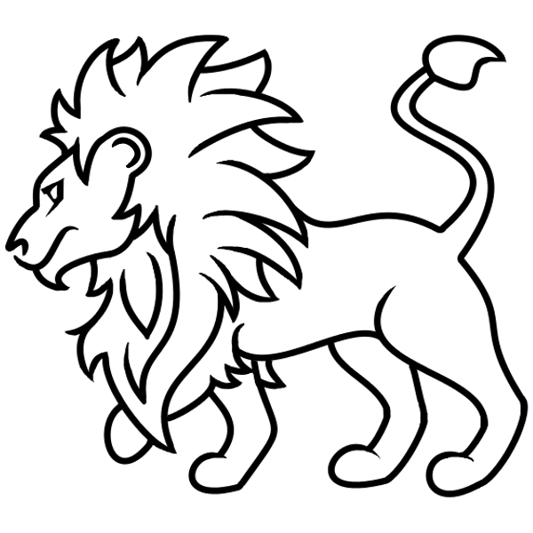
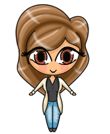
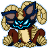
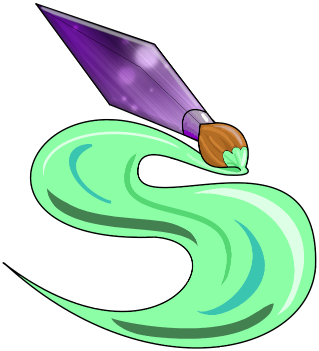

Kristie Larke
I am 30 years of age and from Bournemouth, England.
Neopets.com is the website that inspired me to become a web developer. I have started to learn properly since June 2021. I own a responsive portfolio website with my CV (www.kristolio.co.uk).
I use YouTube, W3schools and Google to help me with learning HTML, CSS and JavaScript.
I also enjoy graphic design and pixel art. Here are a few examples of images I can create.



